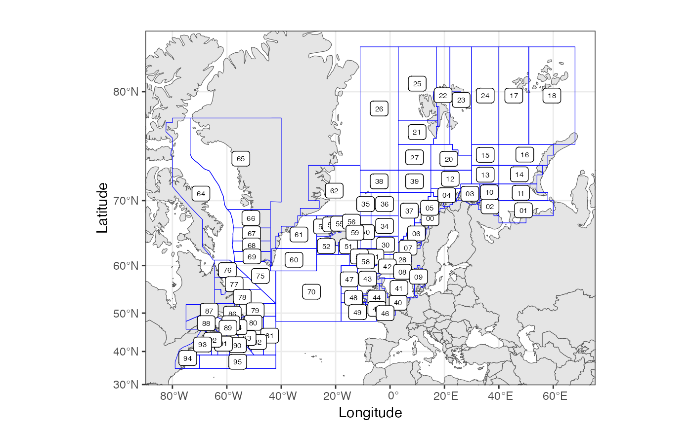

Definition for FAO Northwest Atlantic (Major Fishing Area 21) area coding system. NAFO areas as used in Norwegian fisheries reporting. A coding convention for reporting these areas as an extention of the main areas defined by the Norwegian Directorate of Fisheries identifies the areas in the columns 'StratumName' and 'homr'. International convetion is identified in the column 'nafo_names'.
Usage
data(NAFOareas)Format
SpatialPolygonsDataFrame with location names identified in the column 'StratumName'. See StratumPolygon.
Details
Polygons are defined for all Divisions of Major Fishing Area 21, except Subarea 21.0, Subarea 21.5 and subarea 21.6. A single polygon is defined for Subarea 21.0 and 21.5, and two for subarea 21.6. For subarea 21.6, one polygon comprise Division 21.6.A-C, and one 21.6.D-H
For Division 21.3P and 21.4V a polygon is defined for each subdivision.
Polygons are defined in WGS84 coordinates (unprojected).
Examples
# combine NAFO and mainarea and plot
combo <- rbind(RstoxFDA::NAFOareas[,"StratumName"],
RstoxFDA::mainareaFdir2018[,"StratumName"])
RstoxFDA::plotArea(areaDef = combo)

# conversion table Norwegian and international convention
RstoxFDA::NAFOareas@data[,c("homr", "nafo_names")]
#> homr nafo_names
#> 0 64 0AB
#> 1 65 1A
#> 2 66 1B
#> 3 67 1C
#> 4 68 1D
#> 5 69 1E
#> 6 75 1F
#> 7 86 4R
#> 8 76 2G
#> 9 77 2H
#> 10 78 2J
#> 11 79 3K
#> 12 80 3L
#> 13 81 3M
#> 14 82 3N
#> 15 83 3O
#> 16 84 3Pn
#> 17 85 3Ps
#> 18 87 4S
#> 19 88 4T
#> 20 89 4Vn
#> 21 90 4Vs
#> 22 91 4W
#> 23 94 6ABC
#> 24 95 6DEFGH
#> 25 92 4X
#> 26 93 5YZ